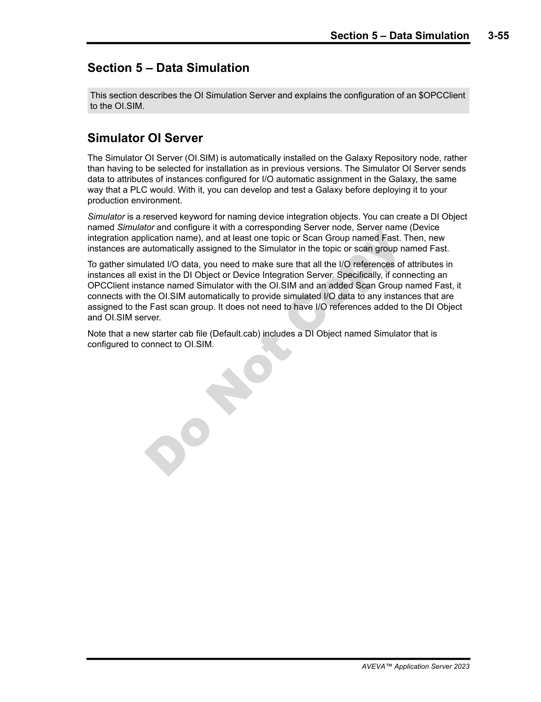
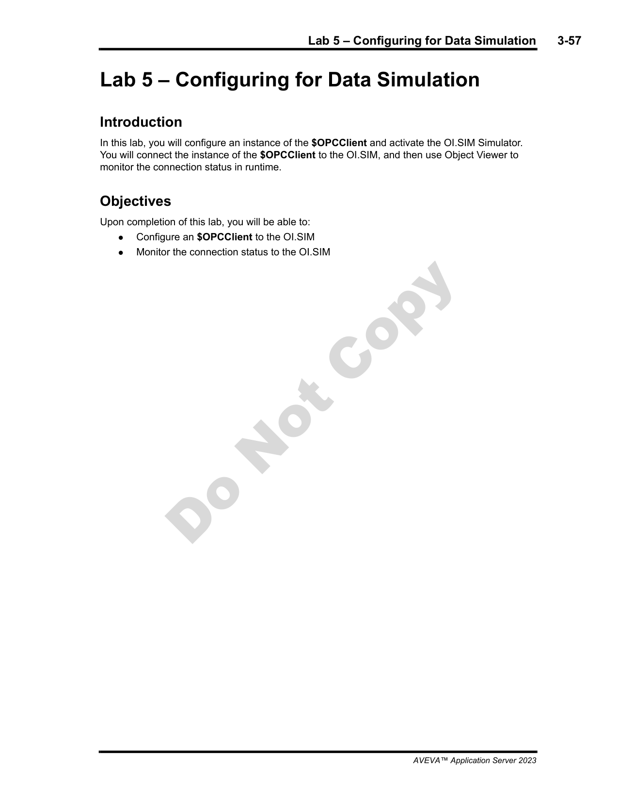
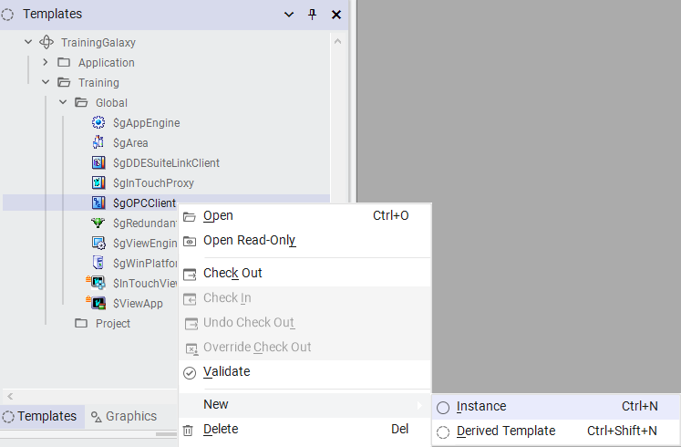
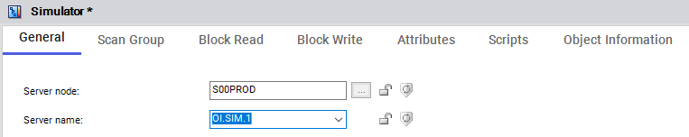
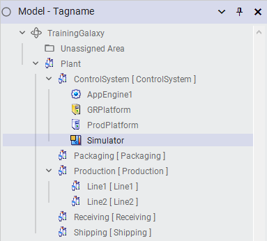
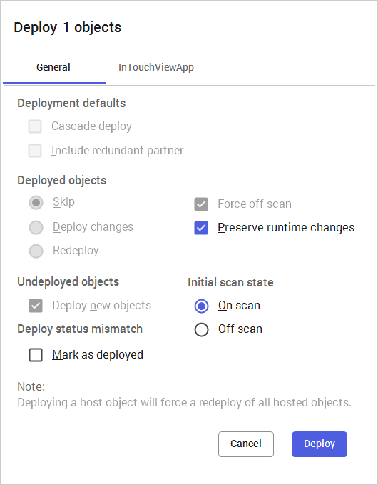
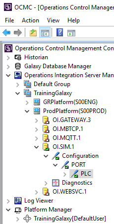

OCMC showing PLC_TEST configuration — Algorithm set to Random, Rate = 200 ms, Range = 20, Force Quality = Good (Module 3, page 3-58)
Source: AVEVA Application Server 2023 Training Manual, Module 3, Section 5 + Lab 5 (pages 3-55 to 3-63)
Simulating real-world process data — using the OI Simulation Server and $OPCClient to build a realistic test environment without physical PLC hardware.
Reference: Module 3, Section 5 (pages 3-55 to 3-56)
In a production environment, Application Server objects communicate with real hardware — PLCs, RTUs, sensors, and actuators via communication drivers. During development and testing, however, you typically do not have physical I/O available at your workstation. Data simulation solves this problem.
The simulation architecture connects three components:

| Benefit | Description |
|---|---|
| No hardware required | Develop and test without physical PLCs or field I/O at your desk |
| Reproducible scenarios | Generate consistent data patterns for repeatable testing |
| Safe testing | Test alarm conditions, scripting logic, and edge cases without risk to real equipment |
| Rapid iteration | Change simulation parameters instantly — no waiting for field-side modifications |
| Full stack validation | Verify the entire data path: OI.SIM → OPC → $OPCClient → I/O Reference → Object Attribute → Visualization |
Reference: Module 3, Lab 5 (pages 3-57 to 3-63)

Reference: Module 3, Lab 5 (page 3-58)
Before connecting $OPCClient to OI.SIM, you should review and configure the simulation parameters for the PLC node. Open the OCMC and expand the OI.SIM server tree to locate the PLC configuration.
Key simulation parameters for each PLC tag:
| Parameter | Example Value | Description |
|---|---|---|
| Algorithm | Random | The pattern the simulated value follows: Random, Ramp, Sine, Step, or Constant |
| Rate | 200 ms | How often the simulated value updates (update interval) |
| Range | 20 | The spread of values for random/ramp simulations (e.g., 0 to Range) |
| Force Quality | Good | Sets the quality field on the OPC data — "Good" simulates healthy field communication |
In this lab, the PLC is configured with Algorithm = Random, Rate = 200 ms, Range = 20, and Force Quality = Good. This produces a randomly varying value that updates five times per second with good quality — a realistic simulation of a noisy sensor reading.
Reference: Module 3, Lab 5 (page 3-59)
The next step is to tell the Galaxy's $OPCClient object to use OI.SIM as its data source. The $OPCClient is a built-in system object that handles OPC DA communication.
Step 2a: In the IDE, open your Galaxy and navigate to the $OPCClient object in the Galaxy hierarchy (it resides under the platform's system area).
Step 2b: Double-click $OPCClient to open its configuration properties. Locate the OPC server connection settings.
Step 2c: Set the OPC Server Name field to OI.SIM. This is the registered OPC server name that OI.SIM exposes to the system.

Step 2d: Apply and save the configuration. The $OPCClient will now attempt to connect to OI.SIM when the Galaxy runs.
Reference: Module 3, Lab 5 (page 3-60)
With $OPCClient connected to OI.SIM, the next step is to link your object attributes to specific simulated data points. This is done through I/O References — each reference specifies the OPC tag path that an attribute should read from.
Step 3a: Open the object that will receive simulated data (for example, an object under the Simulator area of your Galaxy model). Navigate to the attributes you want to link to simulation data.
Step 3b: For each attribute, set the I/O Reference field to the appropriate OI.SIM tag path. The tag path format follows OPC tag naming conventions — it typically includes the PLC name and tag name as configured in OI.SIM.

Step 3c: Verify the I/O references are correct. Each reference should point to a valid tag path in the OI.SIM server. A mismatch will result in Unknown quality at runtime.
Reference: Module 3, Lab 5 (page 3-61)
The Galaxy model view provides a visual hierarchy of all objects. In this lab, the simulated objects are organized under a dedicated area in the model.

The model tree shows the full organizational hierarchy:
Reference: Module 3, Lab 5 (pages 3-62 to 3-63)
With all configuration complete, deploy the objects to runtime and verify the data flow.
Step 5a: Right-click the modified objects (or the Simulator area) and select Deploy. Wait for deployment to complete successfully.

Step 5b: After deployment completes, open the OCMC to verify that OI.SIM is communicating correctly. Expand the OI.SIM server node to see the PLC structure.

The OCMC confirms:
TrainingGalaxy(DefaultUser) — confirming the Galaxy is connected and activeStep 5c: Open Object Viewer on one of the deployed simulator objects. You should see live values updating at the configured rate (e.g., every 200 ms for the Random algorithm).
OI.SIM exactlyReference: Module 3 (all sections and labs)
Module 3 has covered the fundamental building blocks of an Application Server Galaxy. Here is a complete summary of all five sections and five labs:
| Topic | Key Concepts | Lesson |
|---|---|---|
| Section 1: Object Templates | Base templates, inheritance, derived objects, template hierarchy | Lesson 6 |
| Lab 2: Creating Objects | Instantiating objects from templates, configuring attributes | Lesson 7 |
| Section 2: Attributes & I/O | Attribute types, I/O references, source configuration | Lesson 7 |
| Section 3: Deployment | Deploy, undeploy, deployment hierarchy, status monitoring | Lesson 8 |
| Lab 3: Deploying Objects | Hands-on deployment workflow, verifying deployment status | Lesson 8 |
| Section 4: Object Viewer | Inspecting live object data, attribute values, communication status | Lesson 9 |
| Lab 4: Object Viewer | Using Object Viewer to monitor deployed objects in real time | Lesson 9 |
| Section 5: Data Simulation | OI Simulation Server, $OPCClient, simulation algorithms and parameters | Lesson 10 |
| Lab 5: Data Simulation | Configuring OI.SIM, connecting $OPCClient, I/O references, deploying and verifying | Lesson 10 |
Q1: What is the OI Simulation Server (OI.SIM)?
A software-based OPC DA server that generates simulated analog and digital data values, allowing you to test Galaxy objects without physical I/O hardware.
Q2: What Galaxy object is configured to connect to OI.SIM, and what property do you change?
$OPCClient — you set its OPC Server Name property to "OI.SIM" so it connects to the simulation server via OPC DA.
Q3: In OCMC, if a PLC tag is configured with Algorithm = Random, Rate = 200 ms, and Range = 20, what does this produce?
A randomly varying value within a range of 0 to 20, updating every 200 milliseconds (five times per second), simulating a noisy sensor reading.
Q4: What must you configure on object attributes to link them to specific OI.SIM data points?
I/O References — each attribute's I/O Reference field is set to the OI.SIM OPC tag path that provides the simulated value.
Q5: What does "Force Quality = Good" in the OI.SIM PLC configuration mean?
It forces the OPC data quality field to "Good" for all simulated values, simulating healthy field communication. If set to Bad or Uncertain, it allows testing bad-quality handling logic.
Q6: If Object Viewer shows "Unknown" for an attribute after configuring I/O references, what should you check first?
Verify that OI.SIM is running (check OCMC or Windows Services), confirm the OPC server name in $OPCClient is "OI.SIM" (not misspelled), and ensure the object was redeployed after I/O reference changes.
Click each answer to reveal it.
OI.SIM to read simulated data into the Galaxy.Next: Lesson 11 — Module 4 begins.